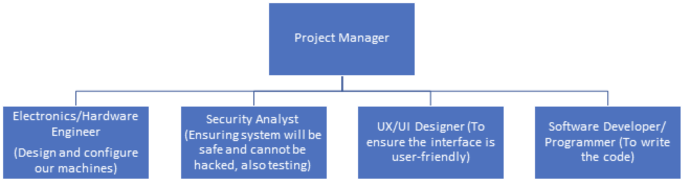

We explore four exciting and vital positions in the IT world that can help us deliver the the project outcomes.
The main outcome for our project is to create an imaging communication tool using a combination of new and older technologies. Here we will propose detailed position descriptions for the team required to carry out the previously discussed project plan. Below is the proposed team structure for the development of a Raspberry Pi based integrated SSTV Encoder/Decoder, with end-to-end encryption. Our innovative project development team will include the following 4 positions. The combination of the skills described in the following job descriptions will ensure the efficiency of our team and product.

The knowledge and skills associated with Electronics / Hardware Engineers are necessary throughout the lifecycle of this project. Electronic related hardware is a major component of this project and the successful candidate will be involved in its design, development, testing and production phases. This team requires individuals who communicate well and work efficiently together to pursue technical solutions with innovation and passion.
Key responsibilities include:
Skills and experience required:
This position is vital for the design, development and implementation of software associated with the project. A security analyst will contribute to reviews of the design and participate in the expansion of project. This team requires individuals who communicate well and work efficiently together to pursue technical solutions with innovation and passion. You will also exhibit an ability to constantly learn and maintain the necessary knowledge of security in a constantly evolving cyber threat environment.
Key responsibilities include:
Skills and experience required:
Working with an exciting young start-up venture, Group 15, the company are seeking a strong, diverse design digital creative to join their upcoming project. You are a bright, enthusiastic and personable UX/UI Designer, looking to lead the implementation of the interface design of a Mission Critical Communication portable device. Working with a small group of professionals of diverse backgrounds, this is a fantastic position suited for an experienced Designer looking to make a mark on an innovative, and potentially lifesaving, technology.
With a minimum of four years’ experience under your belt, as well as a varied digital design portfolio, you will be a quick thinker, offer a solutions-based approach to tasks and problems, have astute research skills, including the ability to extract the necessary information from focus groups, and be confident to present to a wide variety of stakeholders in a clear, concise and engaging manner.
Your ability to lead the design of this prototype will be critical in the success of this project. Having a thorough understanding of the segments of consumers, as well as a detailed interpretation of their useability needs, will be required of the position.
This position will allow you to become a key contributor to creating the optimal experience of this prototype. Due to the time-sensitive nature of the product’s intended use, the design will need to be as succinct and minimal as possible, leaving no ambiguity at all to any of its features. It will require a great deal of research into creating the right balance of detail and usability.
The incumbent will be highly experienced in design tools such as Invision, Sketch, Adobe XD, Photoshop, and/or Figma. Experience in designing for Linux Distribution OS will be highly advantageous.
Key responsibilities include:
Skills and experience required:
We are looking for a bright, creative personality to join Group 15. As a software developer your key role is to ensure efficiency and effectiveness of software, as you are responsible to implement functional programs for the development of software, web, and multi-media apps. Must be involved and engaged in all phases of the development process from gathering system requirements, designing and implementation of new, modified, or ongoing projects. Crucial component to improve business efficiencies and leveraging resources to escalate business growth.
Key responsibilities include:
Skills and experience required: